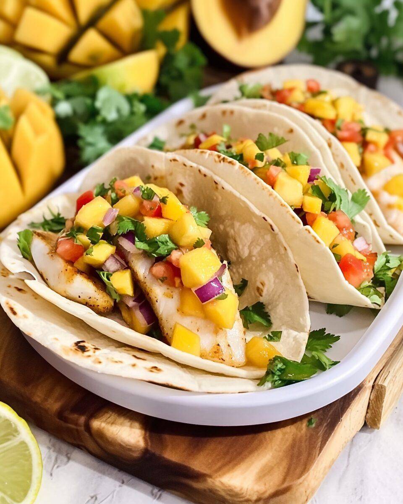
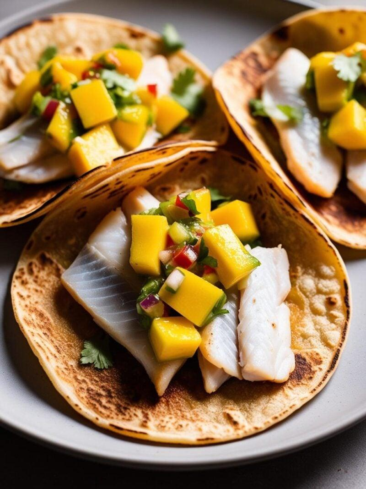
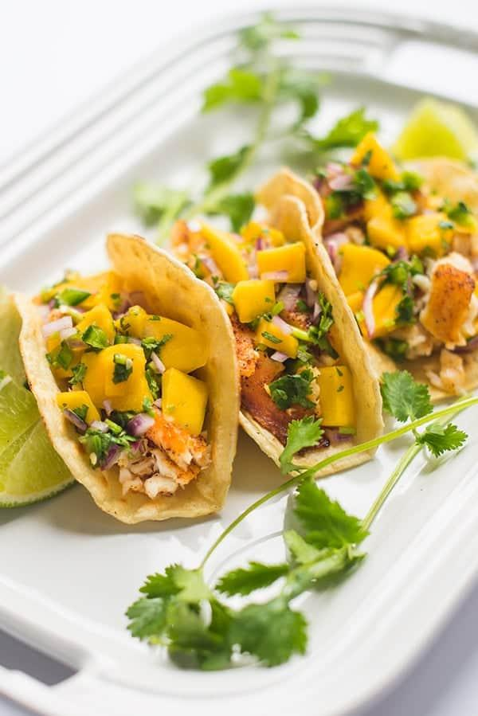

Note: Most bass are released in Quebec — and that's the right call most of the time. But the regulations allow you to keep them above a legal size, and if you do decide to keep one, you owe it to the fish to do something worth the decision. This is that dish.
Largemouth and smallmouth bass are a sport fish first, a table fish second. Their value in the water is real — they're predators, they're challenging to catch, and Quebec anglers have built a culture around releasing them. But bass flesh is mild, firm, and genuinely good eating when handled right. It doesn't have the fat of salmon or the delicacy of perch, so it needs some help: a spiced crust, a bright salsa, something creamy, something acidic.
The mango salsa does most of the heavy lifting. Sweet, sharp, a bit of heat from jalapeño, freshened up with lime and cilantro. Against a lime crema and a charred corn tortilla, it makes a complete thing. The fish gets a dry spice rub and a quick sear in a hot pan — no batter, no deep fry. The crust comes from the spices directly, which is faster and leaves the flesh cleaner.
Make the Salsa First
The mango needs time. Combine diced mango, red onion, jalapeño, cilantro, lime juice, and salt, then leave it at room temperature for at least 20 minutes. Don't refrigerate it yet — the mango needs to soften slightly into the lime juice and give up some of its liquid. That rest is what turns a pile of chopped fruit into a proper salsa. Taste it after resting and adjust the lime or salt.
The Spice Crust
Smoked paprika, cumin, garlic powder, onion powder, chili powder, salt, cayenne, and black pepper — mixed dry and pressed directly onto the fillets. Pat the bass completely dry first, then coat all over and press the spice mix in with your hands. Cut larger fillets into taco-sized pieces, roughly 8 to 10cm long, before cooking.
Cast iron, medium-high heat, hot oil. Two to three minutes on the first side without touching — you want a dark, fragrant crust. Flip and cook 90 seconds to two minutes more. The flesh should flake when pressed with a finger. Rest for two minutes off the heat, then break into large chunks for the tacos.

"If you kept one, make it count. Spice-crusted bass with mango salsa and lime crema — the decision justified on a plate."
The Full Recipe
Ingredients — The Fish
- 600g to 700g bass fillets, skin off, pin bones removed
- 1 tsp smoked paprika
- 1 tsp cumin
- ½ tsp garlic powder
- ½ tsp onion powder
- ½ tsp chili powder
- ½ tsp fine salt
- ¼ tsp cayenne
- ¼ tsp black pepper
- 2 tbsp neutral oil
Ingredients — Mango Salsa
- 1 large ripe mango, diced small (about 1½ cups)
- ¼ red onion, finely diced
- 1 jalapeño, seeds removed, finely chopped
- ¼ cup (15g) fresh cilantro, roughly chopped
- Juice of 2 limes
- ¼ tsp fine salt
Ingredients — Lime Crema
- ½ cup (120g) sour cream
- 2 tbsp mayonnaise
- Juice and zest of 1 lime
- 1 small garlic clove, grated
- Pinch of salt
To Serve
- 8 to 12 small corn tortillas
- 1½ cups (135g) green cabbage, shredded fine
- Extra lime wedges
- Hot sauce
Method
- Make the salsa. Combine mango, red onion, jalapeño, cilantro, lime juice, and salt. Toss well, taste, and adjust lime or salt. Leave at room temperature for at least 20 minutes — don't refrigerate yet. The mango needs to soften into the lime juice.
- Make the crema. Whisk sour cream, mayonnaise, lime juice, zest, and grated garlic together until smooth. Season with salt. Refrigerate until needed.
- Season the fish. Combine all the spices. Pat bass fillets completely dry, then coat all over with the spice mix, pressing it in firmly. Cut larger fillets into taco-sized pieces, roughly 8 to 10cm long.
- Cook the fish. Heat a cast iron or heavy skillet over medium-high heat until hot. Add the oil. Lay fillets in without crowding and cook 2 to 3 minutes on the first side without touching. Flip and cook 90 seconds to 2 minutes more. The crust should be dark and fragrant; the flesh should flake when pressed. Rest 2 minutes off heat, then break into large chunks.
- Warm the tortillas. Directly over a gas flame or in a dry skillet, char each tortilla 20 to 30 seconds per side until warm with some blackened spots. Wrap in a clean cloth to keep pliable.
- Build the tacos. Crema on the tortilla first, then a pinch of shredded cabbage, a few chunks of fish, a spoonful of mango salsa. Lime wedge on the side, hot sauce if you want it.

A Few Notes
On yield. One bass in the 35 to 45cm range gives you roughly 300 to 400 grams of usable fillet. You'll need two fish for this recipe. Walleye works well alongside bass if you happened to keep both — the spice rub suits any firm white fish.
On regulations. Always check current Quebec fishing regulations for legal size and bag limits before keeping any bass. Largemouth and smallmouth limits vary by zone and season. When in doubt, release.
On substitutions. Any firm white freshwater fish — walleye, pike fillets, yellow perch — works with this exact recipe. The mango salsa is the constant; the fish is interchangeable.
On the salsa. Ripe mango makes or breaks it. The mango should give slightly when pressed. An underripe mango is too firm and too tart; an overripe one turns the salsa mushy. If mango is out of season, diced pineapple is a solid substitute.

20+ years fishing Quebec's freshwater systems. Kayak angler, catch-and-release advocate, and founder of Sub Urban Anglers.
Read More About Me